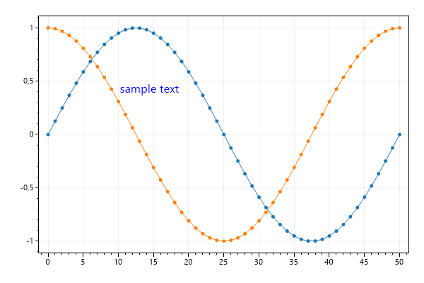
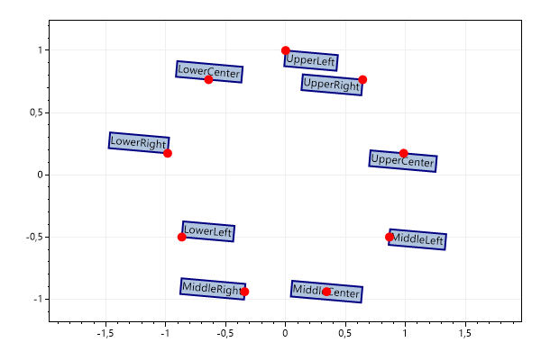
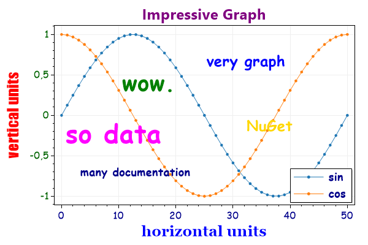

This page contains recipes for the Text category.
Visit the Cookbook Home Page to view all cookbook recipes.
Visit the Cookbook Home Page to view all cookbook recipes.
Text
The Text plottable displays a string at an X/Y coordinate in unit space. Unlike the Annotation plottable, text moves when the axes are adjusted.
var plt = new ScottPlot.Plot(600, 400);
int pointCount = 51;
double[] x = DataGen.Consecutive(pointCount);
double[] sin = DataGen.Sin(pointCount);
double[] cos = DataGen.Cos(pointCount);
plt.AddScatter(x, sin);
plt.AddScatter(x, cos);
plt.AddText("sample text", 10, .5, size: 16, color: Color.Blue);
plt.SaveFig("text_quickstart.png");

Text Alignment and Rotation
Alignment indicates which corner is placed at the X/Y coordinate.
var plt = new ScottPlot.Plot(600, 400);
ScottPlot.Alignment[] alignments = (ScottPlot.Alignment[])Enum.GetValues(typeof(ScottPlot.Alignment));
for (int i = 0; i < alignments.Length; i++)
{
double frac = (double)i / alignments.Length;
double x = Math.Sin(frac * Math.PI * 2);
double y = Math.Cos(frac * Math.PI * 2);
var txt = plt.AddText(alignments[i].ToString(), x, y);
txt.Alignment = alignments[i];
txt.Font.Color = Color.Black; ;
txt.BackgroundColor = Color.LightSteelBlue;
txt.BackgroundFill = true;
txt.Rotation = 5;
txt.BorderSize = 2;
txt.BorderColor = Color.Navy;
txt.DragEnabled = true;
plt.AddPoint(x, y, Color.Red, 10);
}
plt.Margins(.5, .2);
plt.SaveFig("text_alignment.png");

Custom Fonts
You can pass in a Font to further customize font options
var plt = new ScottPlot.Plot(600, 400);
// display some interesting data in the background
plt.AddSignal(DataGen.Sin(51), label: "sin");
plt.AddSignal(DataGen.Cos(51), label: "cos");
// add text with custom fonts
plt.AddText("very graph", 25, .8, new Drawing.Font() { Name = "comic sans ms", Size = 24, Color = Color.Blue, Bold = true });
plt.AddText("so data", 0, 0, new Drawing.Font() { Name = "comic sans ms", Size = 42, Color = Color.Magenta, Bold = true });
plt.AddText("many documentation", 3, -.6, new Drawing.Font() { Name = "comic sans ms", Size = 18, Color = Color.DarkBlue, Bold = true });
plt.AddText("wow.", 10, .6, new Drawing.Font() { Name = "comic sans ms", Size = 36, Color = Color.Green, Bold = true });
plt.AddText("NuGet", 32, 0, new Drawing.Font() { Name = "comic sans ms", Size = 24, Color = Color.Gold, Bold = true });
// configure axis labels
plt.YAxis.Label(label: "vertical units", fontName: "impact", size: 24, color: Color.Red, bold: true);
plt.XAxis.Label(label: "horizontal units", fontName: "georgia", size: 24, color: Color.Blue, bold: true);
plt.XAxis2.Label(label: "Impressive Graph", size: 24, color: Color.Purple, bold: true);
// configure tick labels
plt.XAxis.TickLabelStyle(color: Color.DarkBlue, fontName: "comic sans ms", fontSize: 16);
plt.YAxis.TickLabelStyle(color: Color.DarkGreen, fontName: "comic sans ms", fontSize: 16);
// add a legend to the corner
var legend = plt.Legend();
legend.FontName = "comic sans ms";
legend.FontSize = 18;
legend.FontBold = true;
legend.FontColor = Color.DarkBlue;
plt.SaveFig("text_fonts.png");
